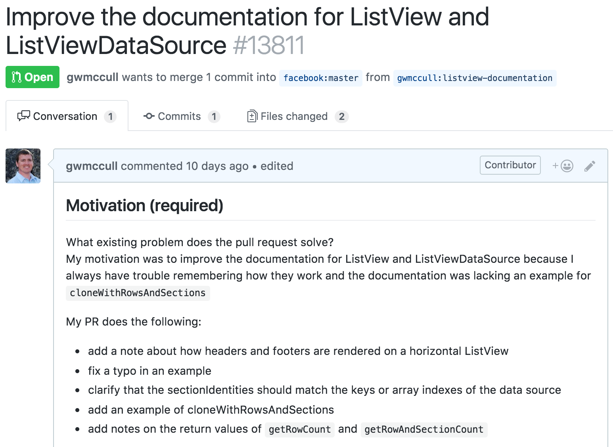

How to Get Started
Tools to Get Started
- npm
- git & github
- testing framework
- node
Choose a Project You Use on a Regular Basis
Small Projects
Large Projects
fork the repo
create or fix tests
commit your code
create a pull request

sign the Contributor License Agreement (CLA)
What to Expect Next
Growing as a Contributor
documentation fixes or improvements
larger bug fixes or features
ability to review pull requests and merge
project maintainer
job developing open source
speaking or consulting
burnout
First Timers Only
How to Contribute to Open Source
Up For Grabs
First Pull Request
Contributing to the Mozilla code base